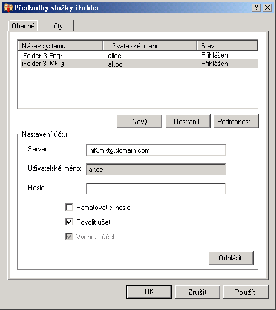

Konfigurace účtu aplikace iFolder
Než začnete vytvářet složky iFolder nebo je ve svém systému sdílet, musíte nejprve nakonfigurovat alespoň jeden účet iFolder. Pro daný hostitelský počítač nebo server můžete vytvořit pouze jeden účet, ale můžete mít i více účtů.
Uživatel s jiným místním přihlášením a uživatelským účtem se může přihlásit ke stejnému počítači v jinou dobu a pomocí aplikace iFolder vytvářet své vlastní složky iFolder v rámci dané identity. Aplikace iFolder synchronizuje pouze složky iFolder, které patří aktivnímu uživateli.
-
Pro přístup k nastavení účtu použijte jeden z následujících postupů:
- Při prvním spuštění po instalaci vás aplikace iFolder vyzve k nastavení účtu iFolder. Klepnutím na tlačítko Ano přejdete přímo na kartu Účty v předvolbách aplikace iFolder.
- V oznamovací oblasti klepněte pravým tlačítkem myši na
 , klepnutím na položku Účty otevřete předvolby složky iFolder na kartě Účty.
, klepnutím na položku Účty otevřete předvolby složky iFolder na kartě Účty.
-
Do oblasti Nastavení účtu se dostanete klepnutím na položku Nový.
-
Zadejte následující hodnoty:
Parametr Popis Server
Název DNS nebo adresa IP podnikového serveru se službou iFolder, na němž máte účet. Příklad: svr21.example.com nebo 192.168.1.1.
Uživatelské jméno
Zadejte svoji totožnost uživatele pro tento účet. Váš správce složek iFolder rozhoduje o tom, zda používaným formátem bude vaše ID uživatele sítě (obecný název LDAP) nebo vaše e-mailová adresa.
Pokud se jmenujete například Jan Novák a ID uživatele je jnovak a e-mailová adresa je jan.novak@priklad.com, správce na serveru nastaví, který z těchto dvou formátů se bude v poli Uživatelské jméno používat pro účely ověření.
Heslo
Heslo pro vaše uživatelské jméno.
Pamatovat si heslo
Vyberete-li možnost Pamatovat si heslo, můžete se k tomuto účtu iFolder přihlásit automaticky při každém přihlášení k počítači. Více informací naleznete v části Přihlášení k účtu aplikace iFolder.
Pokud se vaše síťové heslo změní, při příštím pokusu o přihlášení k účtu iFolder proběhne automatické ověření neúspěšně. Aplikace iFolder vás vyzve k přihlášení s novým heslem a umožní vám zadat a uložit nové heslo.
Povolit účet
Pomocí možnosti Povolit účet zapnete u tohoto účtu synchronizaci na pozadí pozvánek iFolder, seznamu uživatelů a složek iFolder.
Výchozí účet
Položka Výchozí účet umožňuje daný účet nastavit tak, aby byl při tvorbě složek iFolder vybrán v rozvíracím seznamu účtů jako výchozí.
 -
Klepněte na tlačítko OK nebo Přihlásit se.
Pokud se zobrazí certifikát, zkontrolujte jej a přijměte klepnutím na tlačítko OK. Účet se zobrazí v seznamu účtů se stavem Přihlášen. Aplikace iFolder začne synchronizovat všechny existující složky iFolder, oznámení aplikace iFolder a seznam uživatelů pro daný účet.
-
Klepnutím na tlačítko OK zavřete dialogové okno předvoleb aplikace iFolder.
-
Nastavte složky iFolder pro účet podle kteréhokoli z následujících postupů:
- Pokud jsou u účtu k dispozici složky iFolder, zobrazí se oznámení aplikace iFolder. Klepněte na zprávu a otevře se dialog Složky iFolder. Pokračujte položkou Nastavení dostupné složky iFolder.
- Pokud u daného účtu neexistují žádné složky iFolder nebo pokud chcete ihned začít přidávat složky iFolder, klepněte pravým tlačítkem myši na ikonu aplikace iFolder a vyberte složky iFolder; otevře se okno složek iFolder. Pokračujte položkou Vytvoření složky iFolder.